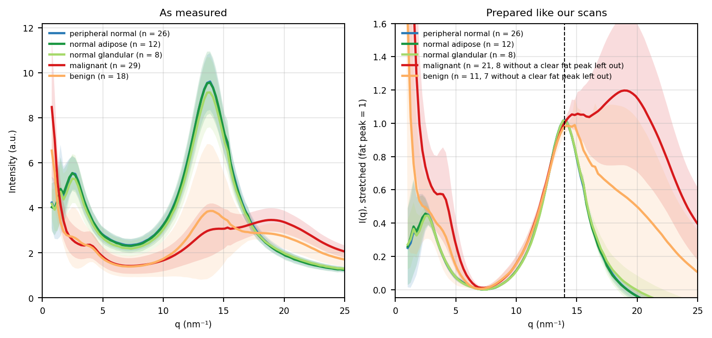

Code
import zipfile
import xml.etree.ElementTree as ET
ANDRE = DATA_DIR / "Andre_FormFactor_dataset.xlsx" # sheet 1: q, then one column per sample; sheet 2: each sample's label and classification
ns = {"m": "http://schemas.openxmlformats.org/spreadsheetml/2006/main"}
with zipfile.ZipFile(ANDRE) as zf:
shared = ["".join(t.text or "" for t in si.findall(".//m:t", ns))
for si in ET.fromstring(zf.read("xl/sharedStrings.xml")).findall("m:si", ns)]
def cell_val(c):
v = c.find("m:v", ns)
if v is None or v.text is None:
return None
if c.attrib.get("t") == "s":
return shared[int(v.text)]
try:
return float(v.text)
except ValueError:
return v.text
def load_sheet(name):
sheet = ET.fromstring(zf.read(f"xl/worksheets/{name}"))
return [{"".join(ch for ch in c.attrib.get("r", "") if ch.isalpha()): cell_val(c) for c in row.findall("m:c", ns)}
for row in sheet.findall("m:sheetData/m:row", ns)]
sheet1 = load_sheet("sheet1.xml")
sheet2 = load_sheet("sheet2.xml")
meta = {}
for row in sheet2[1:]:
sid = str(row.get("A", "")).strip().replace(" ", "")
if sid:
meta[sid] = (str(row.get("B", "")).strip(), str(row.get("C", "")).strip().lower())
col_to_sample = {col: str(name).replace(" ", "") for col, name in sheet1[0].items() if col != "A"}
andre_q = []
series = {col: [] for col in col_to_sample}
for row in sheet1[1:]:
if row.get("A") is None:
continue
andre_q.append(float(row["A"]))
for col in col_to_sample:
v = row.get(col)
series[col].append(np.nan if v is None else float(v))
andre_q = np.asarray(andre_q)
groups = {"peripheral normal": [], "normal adipose": [], "normal glandular": [], "malignant": [], "benign": []}
for col, sid in col_to_sample.items():
if sid not in meta:
continue
lab, cls = meta[sid]
y = np.asarray(series[col], dtype=float)
if lab == "peripheral_normal_tissue":
groups["peripheral normal"].append(y)
elif lab == "normal_adipose":
groups["normal adipose"].append(y)
elif lab == "normal_glandular":
groups["normal glandular"].append(y)
elif cls == "malignant":
groups["malignant"].append(y)
elif cls == "benign":
groups["benign"].append(y)
andre_colours = {"peripheral normal": "#2c7bb6", "normal adipose": "#1a9641", "normal glandular": "#a6d96a",
"malignant": "#d7191c", "benign": "#fdae61"}
# the same preparation as our scans: fit the fat peak (Gaussian + straight line over q 10-17.5), move it to q = 14, then min-max normalise
import nova_sdd_peak_align as align
def prepared(curve):
"""The curve on andre_q with its fat peak moved to q = 14 and stretched (0 at the trough, 1 at the fat peak), or None without a clear fat peak."""
fit = align.fit_peak(andre_q, curve)
if fit is None or not (align.SIGMA_RANGE[0] <= fit["sigma"] <= align.SIGMA_RANGE[1]) \
or not (align.FAT_WINDOW[0] < fit["peak"] < align.FAT_WINDOW[1]):
return None
shifted_q = andre_q * align.TARGET_Q / fit["peak"]
refit = align.fit_peak(shifted_q, curve)
if refit is None:
return None
stretched = ne.normalised_curve(shifted_q, curve, refit["value"], "stretch")
return None if stretched is None else np.interp(andre_q, shifted_q, stretched, left=np.nan, right=np.nan)
prepared_groups = {name: [p for p in map(prepared, curves) if p is not None] for name, curves in groups.items()}
plt.rcParams["font.size"] = 7 # small text to match the other figures at A4 width
fig, (raw_ax, prep_ax) = plt.subplots(1, 2, figsize=(8, 3.8))
for ax, these in ((raw_ax, groups), (prep_ax, prepared_groups)):
for name, curves in these.items():
mat = np.vstack(curves)
mean, std = np.nanmean(mat, axis=0), np.nanstd(mat, axis=0)
left_out = len(groups[name]) - len(curves)
note = f", {left_out} without a clear fat peak left out" if left_out else ""
ax.plot(andre_q, mean, lw=1.8, color=andre_colours[name], label=f"{name} (n = {len(curves)}{note})")
ax.fill_between(andre_q, mean - std, mean + std, color=andre_colours[name], alpha=0.15, linewidth=0)
ax.set(xlabel="q (nm⁻¹)", xlim=(0, 25))
ax.set_ylim(bottom=0)
ax.grid(alpha=0.3)
ax.legend(frameon=False, fontsize=6)
raw_ax.set(ylabel="Intensity (a.u.)", title="As measured")
prep_ax.axvline(14, color="black", ls="--", lw=0.8)
prep_ax.set(ylabel="I(q), stretched (fat peak = 1)", ylim=(-0.05, 1.6), title="Prepared like our scans")
fig.tight_layout()
plt.show()
plt.rcParams["font.size"] = 10